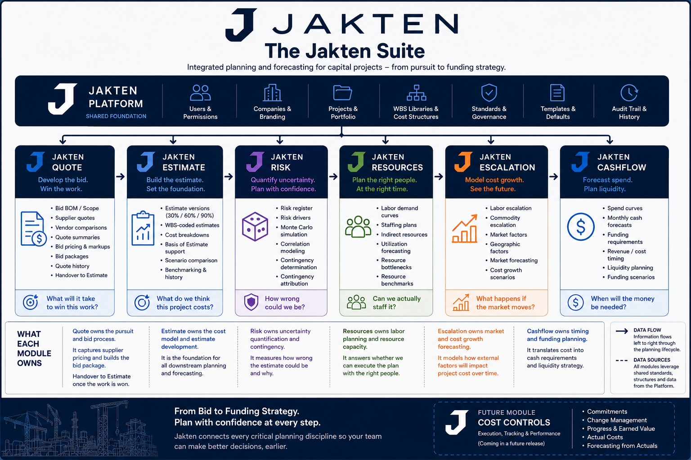

Central hub
Jakten Estimate
Analyze the estimate. Drive every decision.
- Estimate imports
- Estimate versions
- Multi-WBS analysis
- Cost benchmarking
- Basis of Estimate
- Scenario comparison

The Jakten Suite
From pursuit to funding strategy — connected modules built on a shared platform, with Jakten Estimate at the center and Jakten Risk available now.

One connected platform. One source of truth. Consistent data, standards, and security across every module.
Shared foundation for users, companies, projects, WBS libraries, standards, templates, audit history, and governance.
Specialized modules connect around Jakten Estimate — each answering a distinct planning question across the project lifecycle.
Central hub
Analyze the estimate. Drive every decision.
Win the work.
“What will it take to win this work?”
Available now
Quantify uncertainty. Plan with confidence.
“How wrong could we be, and why?”
Request pilot access →Improve our position.
“Where can we add value and improve our position?”
Plan the right people at the right time.
“Do we have the right people and capacity?”
Model cost growth. See the future.
“What happens if the market moves?”
Forecast spend. Plan liquidity.
“When will the money be needed?”
Future module
Learn from every estimate. Get better every time.
Jakten Estimate is not intended to replace the estimating tools teams already use to build detailed estimates.
Instead, it becomes the commercial source of truth after an estimate is imported — organizing cost, quantities, classifications, basis, benchmarks, scenarios, and downstream planning data. Quote, Risk, Opportunities, Resources, Escalation, and Cashflow connect to that hub so teams work from consistent project data rather than disconnected spreadsheets.
Jakten Risk is the first commercial module in the suite — practical Monte Carlo risk analysis for construction estimates, available through a limited pilot program today.